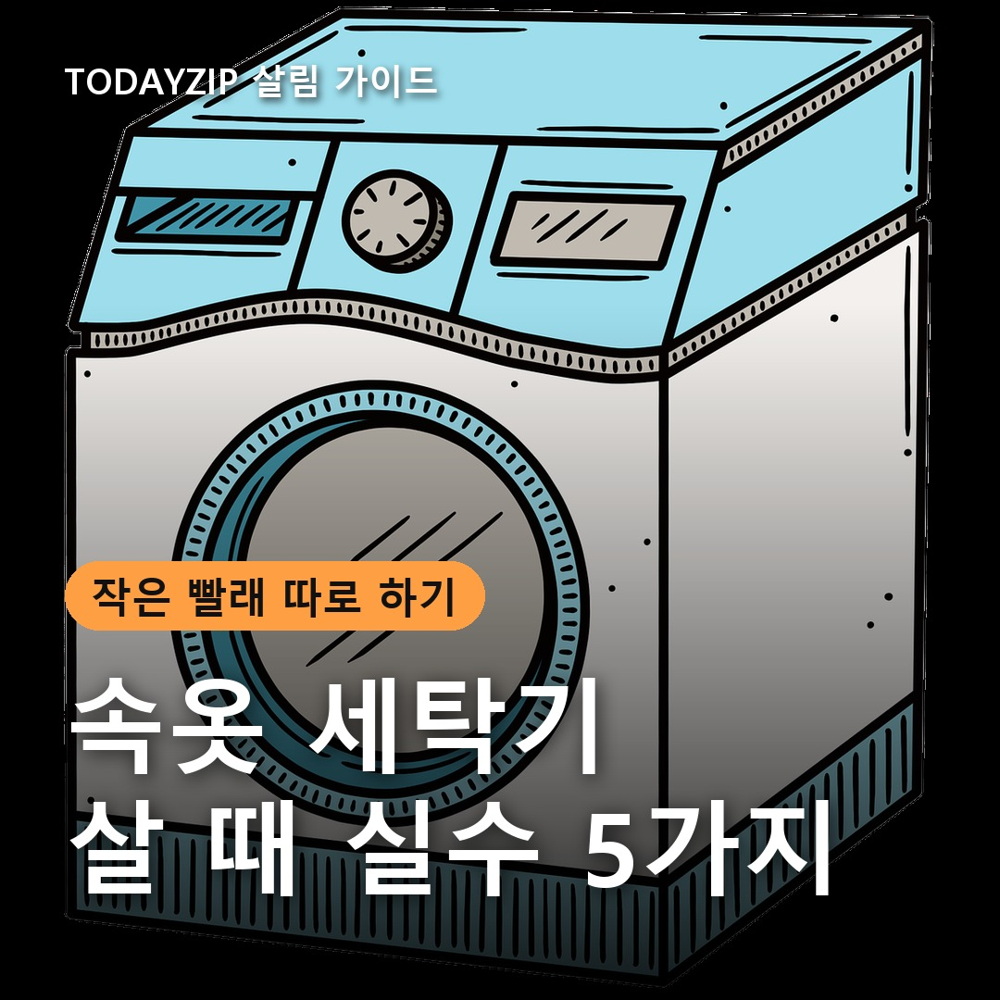
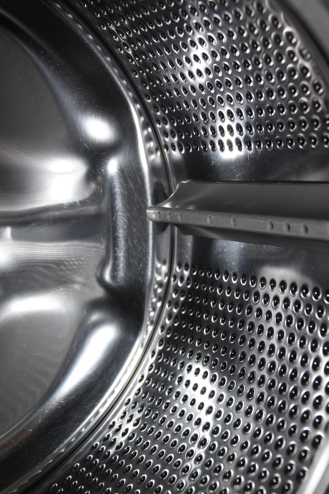
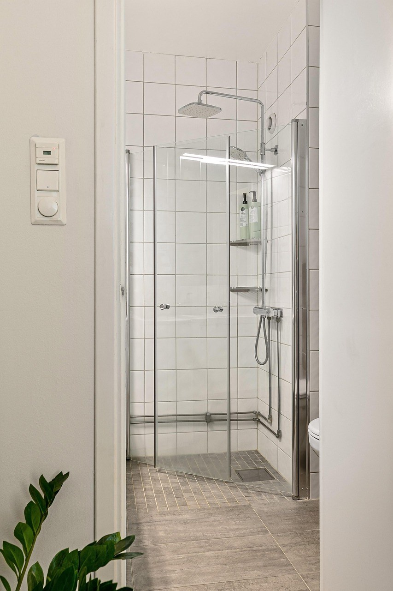

이 포스팅은 쿠팡 파트너스 활동의 일환으로, 이에 따른 일정액의 수수료를 제공받습니다.
[사진 1: 썸네일]
속옷이나 양말 몇 장 때문에 큰 세탁기를 돌리기 아까웠던 적 있나요? 겨울에는 찬물 손빨래도 힘들어서, 작은 빨래만 따로 돌릴 속옷 세탁기를 찾는 분이 많아요.
그런데 미니세탁기는 생김새가 비슷해 보여도 용량 표기, 물 넣는 방식, 고온 코스 유무가 제품마다 꽤 달라요. 사고 나서 '이게 아니었네' 하기 쉬운 실수 5가지와 대신 확인할 것을 정리해 드릴게요.
[사진 2]
📷 [직접 찍은 사진 넣기: 빨래 바구니에 하루치 속옷·양말·수건을 담아 저울에 올린 모습]
속옷 세탁기 상세페이지에 크게 적힌 '10L'는 세탁조에 들어가는 물의 부피인 경우가 많아요. 우리가 아는 세탁기 '○kg'은 마른 빨래 무게라서 서로 다른 숫자예요.
미니세탁기는 대부분 3kg 안팎이고, 실제로 한 번에 넣기 좋은 양은 마른 빨래 1.5~2.5kg 정도로 보는 게 현실적이에요. 속옷·양말·수건 몇 장이 기준이고, 이불이나 두꺼운 겨울옷은 맞지 않아요.
✍️ [내 경험 한두 줄: 우리 집은 속옷·양말 빨래가 며칠에 한 번, 어느 정도 쌓이나요?]
속옷 세탁기는 물을 넣는 방식이 크게 두 가지예요. 설치 자리를 먼저 보면 고르기가 쉬워져요.
| 구분 | 접이식·수동 급수형 | 자동 급수형(소형 통돌이·드럼) |
|---|---|---|
| 물 넣기 | 직접 붓고 직접 버림 | 수도꼭지에 연결 |
| 필요한 것 | 콘센트, 물 버릴 곳 | 수도꼭지·배수구·콘센트 |
| 장점 | 가볍고 보관 쉬움, 가격 낮은 편 | 버튼만 누르면 끝, 탈수가 편함 |
| 아쉬운 점 | 급수·배수를 사람이 챙김 | 자리를 차지, 설치 조건 확인 |
| 가격대(참고) | 수만 원대가 많음 | 10만 원대 후반부터가 많음 |
[사진 3]
아기옷이나 흰 속옷을 따로 빨려고 산다면 고온(삶음) 코스가 있는지 꼭 보세요. 고온 코스를 내세우는 제품도 있지만, 저가 접이식 중에는 이런 코스가 없는 경우가 있어요.
고온 코스가 있는 제품은 설명서대로 빨래를 적게 넣고, 처음 쓰기 전에 빈 통으로 헹굼을 한 번 돌리라고 안내하는 경우가 많아요. 옷의 세탁 표시에서 고온 세탁이 되는지도 같이 확인하세요.
✍️ [내 경험 한두 줄: 따로 빨고 싶은 빨래는 주로 뭔가요? (속옷/양말/아기옷/행주·걸레)]
탈수가 약하거나 없으면 빨래를 다시 손으로 짜야 해서 겨울에는 잘 마르지 않아요. 실내 건조가 많은 계절이라 탈수가 되는지, 세탁조와 탈수조가 따로인지 한 통인지 확인하세요.
작은 빨래를 자주 돌릴 거라면 세탁부터 탈수까지 한 번에 되는 방식이 손이 덜 가요.
[사진 4]
작은 세탁기도 물이 고여 있으면 냄새와 물때가 생기기 쉬워요. 세탁 뒤 물이 완전히 빠지는 구조인지, 통을 꺼내 닦거나 통세척 코스가 있는지 보세요.
쓰고 난 뒤에는 뚜껑을 열어 말려 두는 게 기본이에요.
Q. 속옷 세탁기에 수건도 빨 수 있나요?
A. 몇 장씩은 가능해요. 다만 수건은 물을 머금으면 무거워지니 설명서의 권장 양보다 적게 넣으세요.
Q. 일반 세제를 써도 되나요?
A. 대부분 쓸 수 있지만 양을 줄여야 해요. 제품 설명서의 세제 종류와 양을 먼저 확인하세요.
정리하면, 설치 자리가 없으면 탈수되는 접이식, 수도꼭지가 있으면 자동 급수 3kg형, 아기옷·흰 속옷이 목적이면 고온 코스가 있는지부터 보세요. 어떤 속옷 세탁기든 '10L'가 아니라 실제 kg 표기를 확인하는 게 먼저예요.
여러분은 속옷·양말 빨래를 어떻게 하고 계신가요? 손빨래 팁이나 고민이 있다면 댓글로 나눠 주세요.
인스타그램 @todayzip.info 에서 살림 꿀팁을 30초 영상으로도 볼 수 있어요.
이 포스팅은 쿠팡 파트너스 활동의 일환으로, 이에 따른 일정액의 수수료를 제공받습니다.